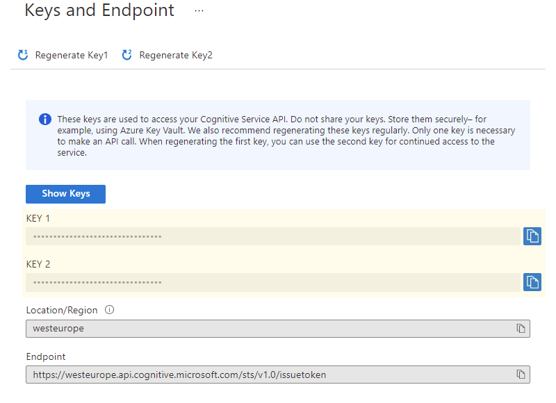

Install via NuGet https://www.nuget.org/packages/Microsoft.CognitiveServices.Speech
Or download from documentation at https://docs.microsoft.com/en-us/azure/cognitive-services/Speech-Service/.
Languages: C#, .NET Standard, C/C++, Java, Objective C, JavaScript
Platforms: Windows 10, Linux, Android, iOS, macOS, ARM64 Devices, Browser, REST
<!-- Speech SDK reference sdk. -->
<script src="js/microsoft.cognitiveservices.speech.sdk.bundle.js"></script>
<!-- Custom scripts for this template -->
<script src="js/speech.js"></script>
var subscriptionKey = "{your-private-key}";
var serviceRegion = "{your-azure-region}";
var speechRecognitionLanguage = "{your-preferred-language}";
let commandReg = /^hey link it|hey link, it/i;
var authorizationToken;
var SpeechSDK;
document.addEventListener("DOMContentLoaded", function () {
startRecognizeOnceAsyncButton = document.getElementById("startRecognizeOnceAsyncButton");
startRecognizeOnceAsyncButton.addEventListener("click", function () {
var speechConfig;
if (authorizationToken) {
speechConfig = SpeechSDK.SpeechConfig.fromAuthorizationToken(authorizationToken, serviceRegion);
} else {
if (subscriptionKey === "") { return; }
speechConfig = SpeechSDK.SpeechConfig.fromSubscription(subscriptionKey, serviceRegion);
}
speechConfig.speechRecognitionLanguage = speechRecognitionLanguage;
var audioConfig = SpeechSDK.AudioConfig.fromDefaultMicrophoneInput();
var recognizer = new SpeechSDK.SpeechRecognizer(speechConfig, audioConfig);
recognizer.recognizeOnceAsync(
function (result) {
recognizer.close();
recognizer = undefined;
startRecognizeOnceAsyncButton.disabled = false;
if (commandReg.test(result.text)) {
voiceCommand(result.text);
}
...
},
function (err) {
...
}
...
});
if (!!window.SpeechSDK) {
SpeechSDK = window.SpeechSDK;
startRecognizeOnceAsyncButton.disabled = false;
...
if (typeof RequestAuthorizationToken === "function") {
RequestAuthorizationToken();
}
}
});
let commandReg = /^hey linkit/i;
...
function voiceCommand(command) {
command = command
.replace(commandReg, "")
.replace(",", "")
.toLowerCase();
...
if (command.includes("change to") || command.includes("changeto")|| command.includes("changed to") || command.includes("changedto"))
{
// Remove intention, isolate command
commandOption = command.replace("changed", "")
.replace("change", "")
.replace("to", "")
.replace(".", "")
.replace(/ /g, '');
switch (commandOption) {
case "gray":
document.getElementById("sideNav").classList.remove('bg-primary');
document.getElementById("sideNav").classList.add('gray');
break;
case "green":
...
}
}
Dick van Straaten
dick.van.straaten@linkit.nl